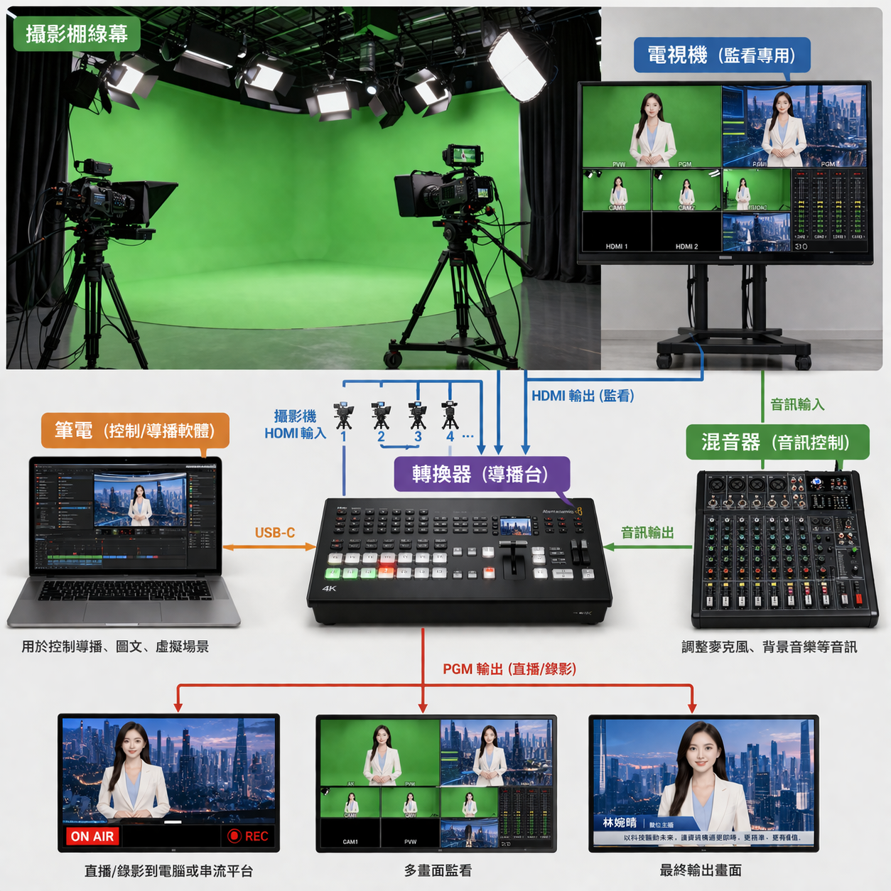
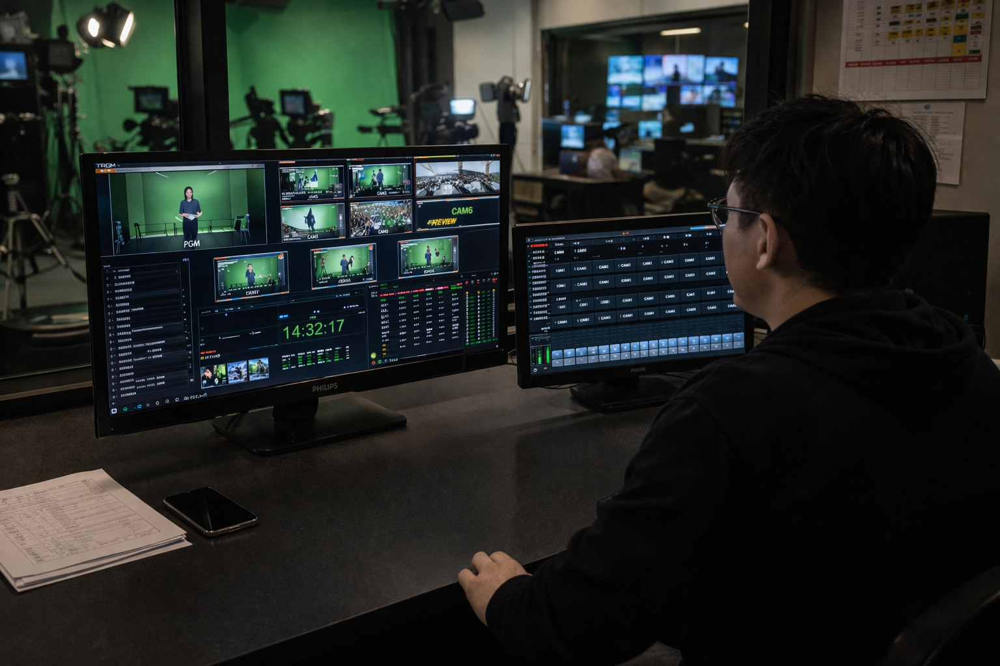
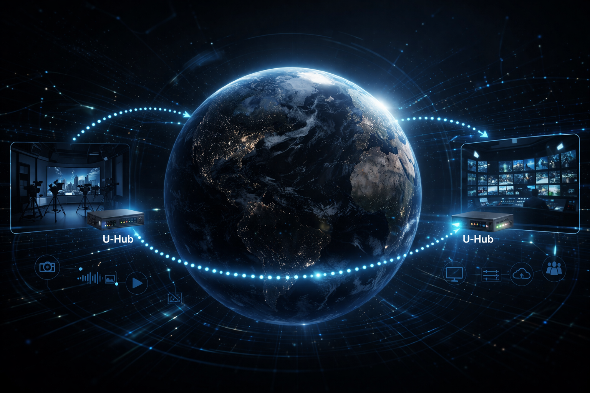

拍攝與訊號進入
由攝影機、音訊設備或其他來源訊號進入系統，建立穩定的前端輸入基礎。
以虛擬攝影棚、節目導播、字幕圖文、提詞系統、訊號轉換與數字人技術為核心， 結合各類廣播設備整合能力，建立完整且可擴充的現代化製播流程。
我們提供的不只是單點工具，而是從拍攝端、訊號流程、導播控制、 字幕圖文、提詞支援到最終輸出的整體系統規劃。
這套架構可依實際需求彈性配置，適用於企業直播、線上課程、 品牌內容、節目錄製、活動製播與 AI 數字人應用。

從內容輸入、訊號處理到節目輸出，各模組可依需求相互搭配， 建立更穩定且有效率的製播流程。
由攝影機、音訊設備或其他來源訊號進入系統，建立穩定的前端輸入基礎。
透過 U-Hub 進行三向訊號轉換與整合，提升不同設備之間的相容與運作穩定性。
以 UE Virtual、U-Show、U-CG、U-TP 等模組建立虛擬製播、導播、字幕與提詞流程。
完成節目錄製或直播輸出，並可進一步搭配 U-Gemini 發展 AI 數字人內容應用。
這六個模組構成整體系統核心，各自負責不同職能，也可依專案需求彈性組合。

虛擬攝影棚與即時場景引擎，支援綠幕製播、虛擬場景切換與更高層次的內容呈現。

節目播出與導播控制核心，協助多機切換、流程管理與整體節目操作。

字幕與圖文包裝系統，支援標題、資訊條、比分板與各種視覺圖層應用。

提詞系統，協助主持人、講者與來賓更穩定地完成直播、演講與課程錄製。

三向訊號轉換器，用於不同訊號格式之間的轉換與整合，提升系統相容性與現場穩定度。

數字人系統，適用於 AI 口播內容、虛擬人物應用與內容自動化延伸。
支援綠幕、虛擬背景與多場景切換，提升節目與品牌內容的視覺呈現。
適合訪談、節目、論壇與企業直播，保留靈活的鏡位與節奏控制能力。
可依節目型態整合字幕條、標題、資訊條與其他視覺圖層元素。
支援即時串流、節目錄製與後續內容再利用需求，建立更完整的輸出流程。
協助主持、講師與企業講者更穩定地完成長時間口播內容。
延伸至數字人口播、虛擬人物與內容自動化場景，擴大內容產出能力。
除了自有核心模組外，我們也可整合各類廣播級設備與現場製播流程， 建立更完整的工作環境。
可搭配導播切換台與節目播出流程，支援不同類型的現場與棚內製播需求。
整合導播與現場人員通訊流程，提升拍攝現場協調效率與節目執行穩定度。
支援多機位攝影系統整合，適合棚內拍攝、訪談、節目與活動現場。
可串接音訊收音、混音與輸出流程，讓整體畫面與聲音品質更一致。
整合錄影設備與檔案輸出流程，滿足直播備份、節目錄製與後製需求。
可配合不同直播平台與串流需求，建立更穩定的對外播出流程。
適合品牌直播、記者會、產品發表、內訓與商務內容拍攝。
支援講師錄製、教材拍攝、簡報整合與長期教育內容製作。
可應用於人物訪談、論壇、Podcast 影像化與多機節目製作。
透過數字人模組進一步擴展品牌內容、自動化口播與虛擬人物應用。
了解內容形式、製播規模、空間條件、預算方向與未來擴充需求。
依實際需求配置六大核心模組，並規劃是否整合其他廣播設備。
進行安裝、路徑整理、流程測試與現場環境對接，提升整體穩定度。
完成操作導入與系統交接，協助客戶更快建立穩定的製播能力。